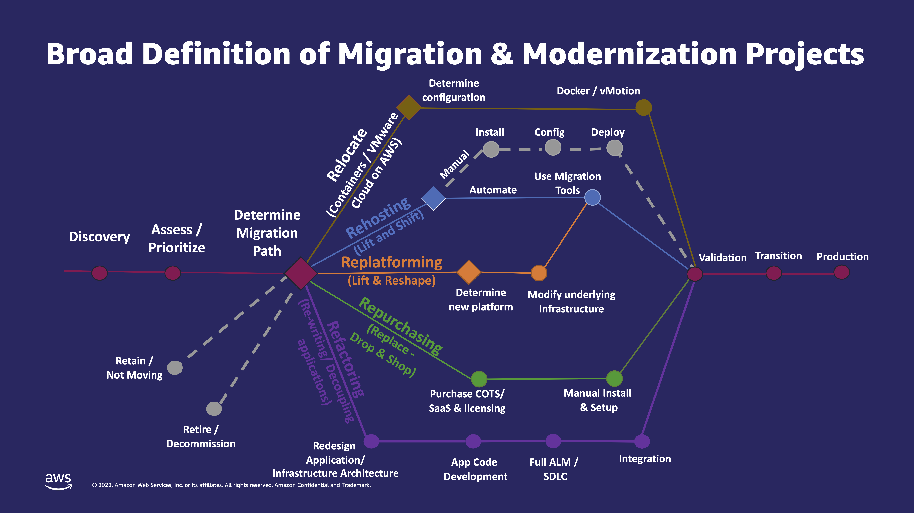

Accelerating Cloud Adoption in Banking and Insurance
Jochen ZehnderJochen Zehnder
Cloud-Native Consultant & Partner at 56K.Cloud

Migration Strategies

- Retire
- Decommission or Archive
-
Retain
- Keep in the source environment or not ready to migrate
-
Rehost
- lift and shift
-
Relocate
- Transfer from on-prem to cloud version of the platform
-
Repurchase
- drop and shop
-
Replatform
- lift, tinker, and shift
- lift and reshape
-
Refactor or re-architect
- Taking full advantage of cloud-native features
About the migration strategies
Legal
I'm not a lawyer, but
LAUX LAWYERS AG
are.
Security
Security is a shared responsibility

All Cloud Providers have a Shared Responsibility Model
Technical
How to structure your Cloud?
- Limit the access via permission
- Limit the access on an account / subscription / ... level
Account Vending
- Create and configure new accounts / subscriptions / ...
- What is the best way to automate this?
Infrastructure as Code (IaC)
- Really good for certain things
- Challenging at scale